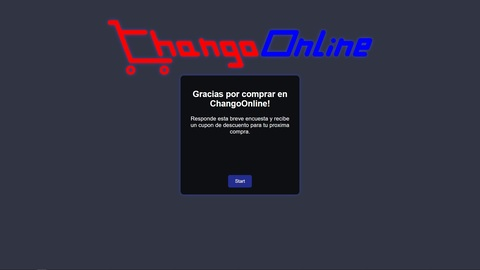
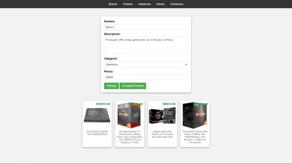

Tobias Rumiz
work in progress... Portfolio not ready
Mientras tanto, te dejo unos proyectos que hice para la facu
-

En un trabajo de Bases de Datos, nos pidieron incluir un enlace de ejemplo para una encuesta en el cuerpo de un mail que se enviaría al cambiar el estado de entrega de un producto en una tabla. Decidí ir un poco más allá y realizar una pequeña encuesta para sumar unos puntos, incluso aunque el profesor intentara negarse a otorgarlos (Pregunta 4).
-

Para Ingenieria de Software tuve que crear una demo de una pagina que tuviese busqueda y publicacion de productos y mostrar la ubicacion de centros de asistencia medica. Utilice leaflet para los mapas, la api de bluelytics para la cotizacion del dolar/euro en la busqueda y la de mercado libre para encontrar productos similares a la hora de publicar y asi elegir un precio acorde.